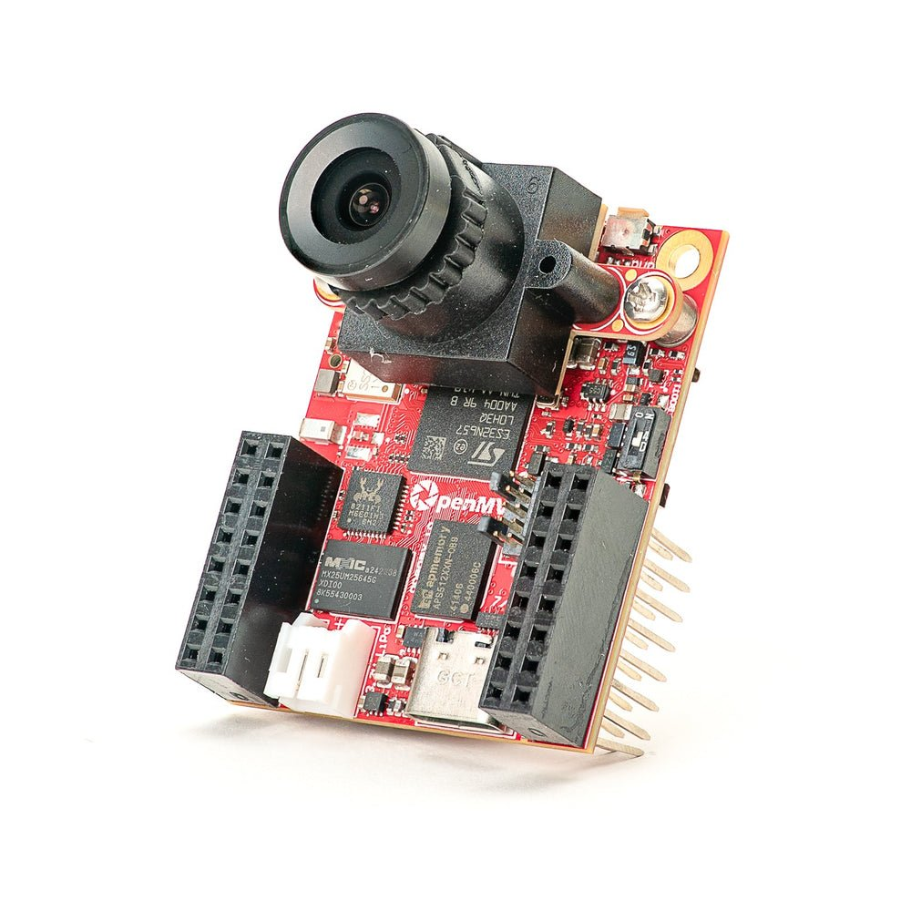
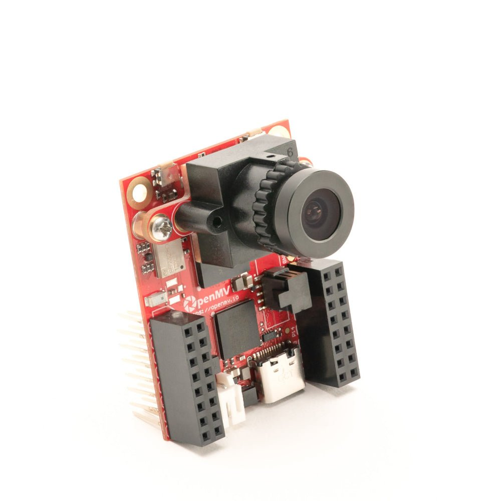
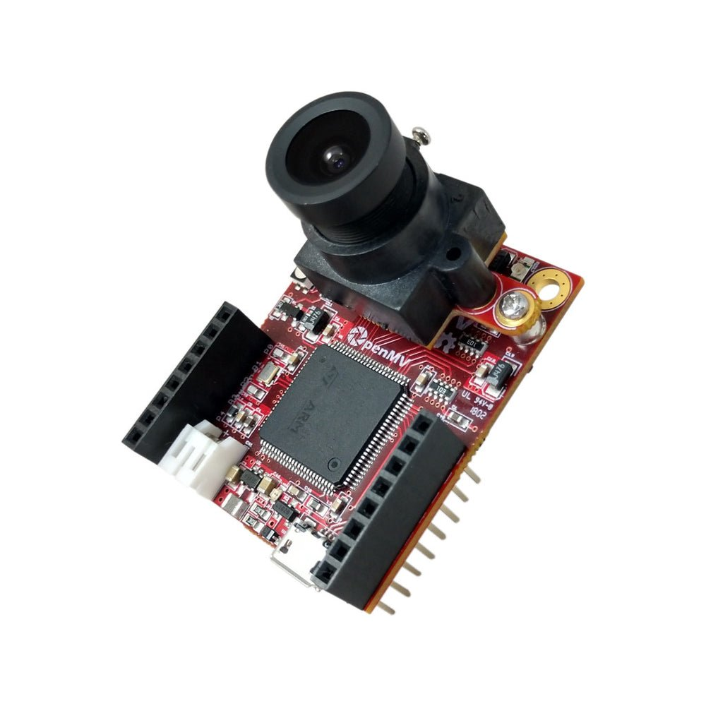
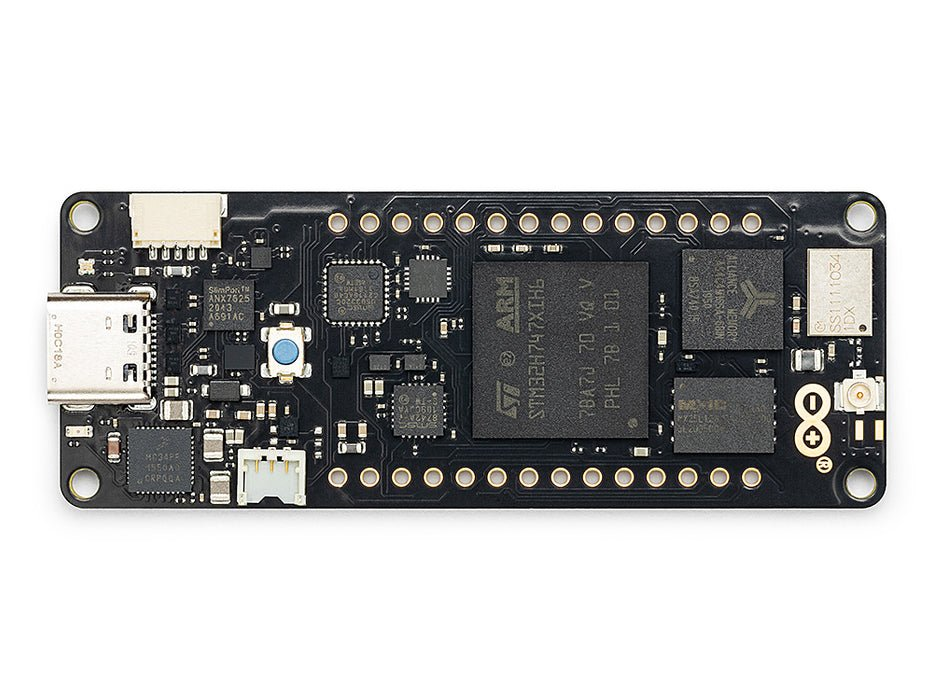

การมองเห็นของเครื่อง
ทำได้ง่าย
การตรวจจับใบหน้าแบบ live, การติดตาม AprilTag, การสแกน QR, และ YOLO ทั้งหมดบนอุปกรณ์ด้วย MicroPython ล้วนๆ ไม่มีคอมพิวเตอร์โฮสต์ ไม่มีคลาวด์
เปิด IDE
ดาวน์โหลดและติดตั้ง OpenMV IDE สำหรับ Windows, macOS, หรือ Linux และเปิด IDE
เชื่อมต่อกล้องของคุณ
เสียบ OpenMV Cam เข้ากับคอมพิวเตอร์ผ่าน USB ไฟ LED ดวงสีน้ำเงินจะกะพริบเมื่อพร้อมใช้งาน
รันสคริปต์แรกของคุณ
คลิกปุ่มเชื่อมต่อไอคอนปลั๊กใน IDE จากนั้นกดลูกศรเล่นสีเขียวเพื่อรันสคริปต์แรกของคุณ
Hello world
ตัวอย่างimport csi
import time
import ml
from ml.postprocessing.ultralytics import YoloV8
csi0 = csi.CSI()
csi0.reset()
csi0.pixformat(csi.RGB565)
csi0.framesize(csi.VGA)
csi0.snapshot(time=2000) # let AWB/AGC stabilize
# Built-in single-class person detector model.
model = ml.Model("/rom/yolov8n_192.tflite",
postprocess=YoloV8(threshold=0.4))
clock = time.clock()
while True:
clock.tick()
img = csi0.snapshot()
# predict returns a list per class of ((x, y, w, h), score) tuples.
for class_dets in model.predict([img]):
for rect, score in class_dets:
img.draw_rectangle(rect, color=(0, 255, 0))
print(clock.fps(), "fps")
การติดตามบุคคลแบบ real-time
โมเดล YOLOv8 บนบอร์ดเป็นตัวตรวจจับบุคคลแบบ single-class — quantised แบบ int8 และติดมาใน ROM
/rom/yolov8n_192.tflite — ไม่ต้องใช้ SD card หรือดาวน์โหลดimport csi
import math
import time
csi0 = csi.CSI()
csi0.reset()
csi0.pixformat(csi.RGB565)
csi0.framesize(csi.QVGA)
csi0.snapshot(time=2000) # let AWB/AGC stabilize
csi0.auto_gain(False)
csi0.auto_whitebal(False)
clock = time.clock()
while True:
clock.tick()
img = csi0.snapshot()
for tag in img.find_apriltags():
img.draw_detection(tag, color1=(255, 0, 0), color2=(0, 255, 0))
deg = math.degrees(tag.rotation)
print("ID %d rotation %.1f deg" % (tag.id, deg))
print(clock.fps(), "fps")
ระบุตำแหน่งและระบุ AprilTags
AprilTags คือเครื่องหมาย fiducial 2 มิติ — ทนต่อการเบลอจากการเคลื่อนไหวและการบดบังบางส่วน และให้ท่าทาง 3 มิติครบถ้วน
x/y/z และการหมุน x/y/zimport csi
import time
import ml
from ml.postprocessing.mediapipe import BlazeFace
csi0 = csi.CSI()
csi0.reset()
csi0.pixformat(csi.RGB565)
csi0.framesize(csi.VGA)
csi0.window((400, 400)) # square window for best results
csi0.snapshot(time=2000) # let AWB/AGC stabilize
model = ml.Model("/rom/blazeface_front_128.tflite",
postprocess=BlazeFace(threshold=0.4))
clock = time.clock()
while True:
clock.tick()
img = csi0.snapshot()
for rect, score, keypoints in model.predict([img]):
img.draw_rectangle(rect, color=(0, 0, 255))
ml.utils.draw_keypoints(img, keypoints, color=(255, 0, 0))
print(clock.fps(), "fps")
ตรวจจับใบหน้าด้วย BlazeFace
BlazeFace ของ Google เป็นตัวตรวจจับใบหน้า TensorFlow Lite แบบเบาที่ส่งคืน bounding boxes พร้อม landmarks 6 จุดต่อใบหน้า
/rom/blazeface_front_128.tflite — pre-quantised ไม่ต้องดาวน์โหลดimport csi
import time
csi0 = csi.CSI()
csi0.reset()
csi0.pixformat(csi.RGB565)
csi0.framesize(csi.QVGA)
csi0.snapshot(time=2000) # let AWB/AGC stabilize
csi0.auto_gain(False)
clock = time.clock()
while True:
clock.tick()
img = csi0.snapshot()
for code in img.find_qrcodes():
img.draw_rectangle(code.rect, color=(255, 0, 0))
print(code.payload)
print(clock.fps(), "fps")
สแกน QR codes จากฟีดสด
ตัวถอดรหัส QR ในตัวรองรับโค้ดที่เอียง, บิดเบี้ยว, และถูกบดบังบางส่วน
import csi
import time
csi0 = csi.CSI()
csi0.reset()
csi0.pixformat(csi.RGB565)
csi0.framesize(csi.QVGA)
csi0.snapshot(time=2000) # let AWB/AGC stabilize
csi0.auto_gain(False)
csi0.auto_whitebal(False)
# LAB thresholds: (L_min, L_max, A_min, A_max, B_min, B_max)
thresholds = [
(30, 100, 15, 127, 15, 127), # red
(30, 100, -64, -8, -32, 32), # green
]
clock = time.clock()
while True:
clock.tick()
img = csi0.snapshot()
for blob in img.find_blobs(thresholds, pixels_threshold=200):
img.draw_rectangle(blob.rect, color=(255, 0, 0))
img.draw_cross((blob.cx, blob.cy))
print(clock.fps(), "fps")
ค้นหาบลอบของสี
find_blobs ส่งคืนบริเวณพิกเซลที่เชื่อมต่อกันซึ่งตรงกับค่าขีดแบ่ง LAB หนึ่งรายการขึ้นไป
pixels_threshold กรองการตรวจจับที่เล็กเกินไป และ merge=True รวมบลอบที่ทับซ้อนกันimport csi
import time
csi0 = csi.CSI()
csi0.reset()
csi0.pixformat(csi.GRAYSCALE)
csi0.framesize(csi.VGA)
csi0.window((640, 80)) # narrow strip for fast linear scanning
csi0.snapshot(time=2000) # let AWB/AGC stabilize
csi0.auto_gain(False)
csi0.auto_whitebal(False)
clock = time.clock()
while True:
clock.tick()
img = csi0.snapshot()
for code in img.find_barcodes():
img.draw_rectangle(code.rect, color=(0, 255, 0))
print(code.payload, "(quality %d)" % code.quality)
print(clock.fps(), "fps")
อ่านบาร์โค้ด 1 มิติ
ค้นหาบาร์โค้ด 1 มิติในเฟรมและถอดรหัสเพย์โหลด
import csi
import time
import ml
from ml.postprocessing.mediapipe import HandLandmarks
csi0 = csi.CSI()
csi0.reset()
csi0.pixformat(csi.RGB565)
csi0.framesize(csi.VGA)
csi0.window((400, 400)) # square window for the model
csi0.snapshot(time=2000) # let AWB/AGC stabilize
# Connections between the 21 keypoints — palm + 5 fingers.
hand_lines = ((0, 1), (1, 2), (2, 3), (3, 4), (0, 5), (5, 6),
(6, 7), (7, 8), (5, 9), (9, 10), (10, 11), (11, 12),
(9, 13), (13, 14), (14, 15), (15, 16), (13, 17), (17, 18),
(18, 19), (19, 20), (0, 17))
model = ml.Model("/rom/hand_landmarks_full_224.tflite",
postprocess=HandLandmarks(threshold=0.4))
clock = time.clock()
while True:
clock.tick()
img = csi0.snapshot()
# predict returns a list per hand: index 0 = left, index 1 = right.
for detections in model.predict([img]):
for rect, score, keypoints in detections:
ml.utils.draw_skeleton(img, keypoints, hand_lines,
kp_color=(255, 0, 0),
line_color=(0, 255, 0))
print(clock.fps(), "fps")
ติดตาม 21 จุดสำคัญของมือ
โมเดล Hand Landmarks ของ MediaPipe จาก Google ระบุตำแหน่ง 21 ข้อต่อบนมือแต่ละข้าง — ข้อมือ, ข้อนิ้ว, และปลายนิ้ว
/rom/hand_landmarks_full_224.tflite — รันแบบ standalone ที่นี่ โดยไม่มีการตรวจจับฝ่ามือก่อนหน้าml.utils.draw_skeleton วาดข้อต่อและการเชื่อมต่อทั้ง 21 จุดในการเรียกใช้ครั้งเดียวใหม่กับ OpenMV?
เริ่มต้นด้วยบทช่วยสอนทีละขั้นตอน — ครอบคลุมการตั้งค่าฮาร์ดแวร์, IDE, สคริปต์พื้นฐาน, และเคล็ดลับสำหรับโปรเจกต์จริงแรกของคุณ
ไลบรารีหลัก
APIฮาร์ดแวร์, กล้อง, การประมวลผลภาพ, ndarrays, ML, มัลติทาสก์, เครือข่าย, เว็บเซิร์ฟเวอร์, และ Bluetooth — ทั้งหมดจาก MicroPython
machine
ฮาร์ดแวร์ระดับต่ำ: GPIO, SPI, I²C, UART, PWM, ADC, และตัวจับเวลา
สำรวจ →csi
การควบคุมกล้อง: รูปแบบพิกเซล, ขนาดเฟรม, การรับแสง, ค่าเกน, และการปรับสมดุลสีขาว
สำรวจ →image
การมองเห็นของเครื่อง: บลอบ, ขอบ, เส้น, วงกลม, ลักษณะเด่น, และการวาด
สำรวจ →ulab
การคำนวณตัวเลขบนอุปกรณ์ — ndarrays, FFTs, และพีชคณิตเชิงเส้น
สำรวจ →ml
การอนุมานโครงข่ายประสาทเทียมบนอุปกรณ์ — จำแนกประเภท, ตรวจจับ, และแบ่งส่วน
สำรวจ →asyncio
มัลติทาสก์แบบ cooperative — รันกล้อง, เครือข่าย, และ I/O พร้อมกัน
สำรวจ →network
Wi-Fi, Ethernet, และซ็อกเก็ตสำหรับ IoT และการสื่อสารระยะไกล
สำรวจ →microdot
เว็บเซิร์ฟเวอร์ขนาดเล็ก — routes, sessions, login, SSE, และ WebSockets
สำรวจ →aioble
Bluetooth Low Energy แบบ async — peripherals, การโฆษณา, และ GATT
สำรวจ →สำรวจตามบอร์ด
ฮาร์ดแวร์เลือก OpenMV Cam ของคุณเพื่อดู pinout, สเปก, และเอกสารอ้างอิงด่วนสำหรับบอร์ด

OpenMV N6 ใหม่
STM32N6 พร้อม NPU ในตัว — MCU ที่เร่งความเร็ว AI รุ่นแรกของ STMicro
สำรวจ →
OpenMV AE3 ใหม่
Alif Ensemble E3 — Cortex-M55 แบบ fusion-class พร้อม Ethos-U55 NPU
สำรวจ →
OpenMV RT1062
NXP i.MX RT1062 Cortex-M7 ที่ 600 MHz พร้อม SDRAM ภายนอก 32 MB
สำรวจ →
OpenMV H7 Plus
STM32H743 พร้อม SDRAM ภายนอก 32 MB และเซนเซอร์ OV5640 5MP
สำรวจ →
OpenMV H7
STM32H743 Cortex-M7 พร้อมโมดูลเซนเซอร์ภาพแบบถอดเปลี่ยนได้
สำรวจ →
Arduino Nicla Vision
บอร์ด STM32H747 ขนาดกะทัดรัด 23 × 23 มม. พร้อมเซนเซอร์ในตัว
สำรวจ →
Arduino Portenta
STM32H747 พร้อม SDRAM 8 MB และรองรับ Vision Shield
สำรวจ →
Arduino Giga
STM32H747 พร้อม SDRAM 8 MB, รองรับ Vision และ Display Shield
สำรวจ →ชิลด์
Add-onsบอร์ดเสริมที่เสียบกับ OpenMV Cam — เครือข่าย, ควบคุมมอเตอร์, จอแสดงผล และอื่นๆ

Gigabit PoE Shield
Gigabit Ethernet พร้อม PoE สำหรับการสตรีมแบนด์วิดธ์สูง
สำรวจ →
Servo Shield
ขับ servo ได้สูงสุด 4 ตัว รับกระแสไฟได้สูงสุด 5A พร้อมจ่ายไฟให้กล้อง อินพุต 6–36V
สำรวจ →
Battery Shield
อินพุตแบตเตอรี่ 1.8–5.5V ผ่านช่อง DC barrel jack
สำรวจ →
Touch LCD Shield
จอ LCD SPI ขนาด 2.3" พร้อมระบบสัมผัสหลายนิ้วแบบ capacitive และ Qwiic
สำรวจ →
PoE Shield
Ethernet 10/100 พร้อม Power-over-Ethernet
สำรวจ →
PIR Shield
ทริกเกอร์การเคลื่อนไหวแบบ standby 6µA พร้อมไฟ IR สีขาวและ 850 nm
สำรวจ →
CAN/RS232 Shield
CAN-FD 8 Mb/s บวก RS-232 1 Mb/s ในชิลด์เดียว
สำรวจ →
RS422/RS485 Shield
อนุกรมดิฟเฟอเรนเชียล 10 Mb/s สำหรับบัสอุตสาหกรรม
สำรวจ →เซนเซอร์
โมดูลกล้องโมดูลกล้องและอแดปเตอร์เซนเซอร์ที่เสียบกับขั้วต่อ board-to-board — สี, ขาวดำ, ความร้อน, และวิสัยทัศน์แบบ event-based

PS5520 5MP HDR Camera
เซนเซอร์ HDR 5MP — ช่วงไดนามิกสูงสำหรับสภาพแสงที่ท้าทาย
สำรวจ →
Multispectral Thermal (PAG7936)
กล้อง global-shutter สี 1MP + ความร้อน FLIR Lepton บนโมดูลเดียวกัน
สำรวจ →
Multispectral Thermal (OV5640)
กล้อง rolling-shutter สี 5MP + ความร้อน FLIR Lepton บนโมดูลเดียวกัน
สำรวจ →
Multispectral Event Camera
GENX320 event sensor + PAG7936 สีบนโมดูลเดียวกัน
สำรวจ →
GENX320 Event Camera
วิสัยทัศน์แบบ event-based ของ Prophesee — ความแม่นยำเชิงเวลาระดับไมโครวินาที
สำรวจ →
FLIR Boson Adapter
อแดปเตอร์สำหรับ FLIR Boson / Boson+ — ภาพความร้อนความละเอียดสูงขึ้น
สำรวจ →
FLIR Lepton Adapter
อแดปเตอร์สำหรับ FLIR Lepton 1.x / 2.x / 3.x thermal cores
สำรวจ →
Global Shutter Camera Module
เซนเซอร์ global-shutter ขาวดำสำหรับการจับภาพการเคลื่อนไหวเร็ว
สำรวจ →แหล่งข้อมูลเพิ่มเติม
MicroPythonชุมชนและลิงก์
ภายนอกหน้าหลัก OpenMV
ผลิตภัณฑ์, แอปพลิเคชัน, ดาวน์โหลด, และข่าวสาร
ฟอรัม
การสนทนา ความช่วยเหลือ และการแชร์โปรเจกต์ในชุมชน
OpenMV บน GitHub
แหล่งที่มาของเฟิร์มแวร์, IDE, และตัวอย่าง — ยินดีรับ issues และ pull requests
MicroPython บน GitHub
แหล่งที่มาของ MicroPython firmware upstream — สิ่งที่ OpenMV พัฒนาต่อยอดมา